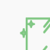
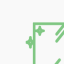

엔브레인 Kiosk
캐어유 홈페이지에 방문하여 다른 페이지들도 둘러보세요.
캐어유 기업 홈페이지 구축 프로젝트입니다. 담당한 페이지 중에서 레이아웃이 다양하고 디테일이 풍부한 스마트케어 제품 상세페이지(키오스크, T-pro, Temi 3종)를 중심으로 소개하였습니다.
주요 사항, 와이어프레임, 스타일 가이드, 최종 디자인 링크 순으로 구성하였습니다.
2021년 5월 ~ 6월
2023년 5월 홈페이지 개편으로 디자인 및 퍼블리싱 방식이 변경되었습니다.
웹 디자이너 1명
웹 디자이너 겸 퍼블리셔 1명 (본인)
프론트엔드 개발자 1명
스마트케어 제품(3p), 홍보센터(2p), 문의하기, 사이트맵, 푸터 디자인 및 전체 페이지 반응형 디자인 전담(pc에서 모바일 버전으로)
퍼블리싱 전담
웹 디자인 툴:
Adobe XD, Photoshop, Illustrator
퍼블리싱 툴:
Visual Studio Code, Github
사용 언어:
HTML(퍼블리싱 후 PHP로 통합), CSS(SCSS), Javascript(jQuery)
현재 사용 중인 기기 또는 브라우저의 가로 폭(px 기준)에 반응하여 와이어프레임이 소개됩니다. (모바일/태블릿/데스크톱)
배경 이미지와 제품 이미지를 과감하게 사용하여 시선을 끌어 주목도를 높였습니다. 내부에 링크 버튼을 배치하여 제품 문의를 유도하였습니다.
제품 이미지를 중앙에 배치하여 강조하고 제품 기능은 아이콘을 사용하여 직관적으로 안내합니다. 반응형 퍼블리싱을 고려하여 구성 요소들의 배열을 유동적으로 변경할 수 있도록 설계합니다.
제품의 정면, 측면 및 확대 이미지를 활용하여 기능을 상세히 설명합니다.
제품이 제공하는 서비스를 이미지를 포함한 카드 형식으로 정렬하여 소개합니다.
접근성이 제한적인 테이블(표) 형식을 지양하고 리스트 형식으로 정보를 제공합니다.
관련 사이트 드롭박스 UI를 제공합니다. 더불어 주소, 연락처 및 SNS 바로가기를 포함합니다.
캐어유 브랜드 컬러와 조화를 이루는 컬러들로 제품마다 테마를 달리하여 각 제품을 구분하였습니다.
가독성이 좋은 고딕 계열 폰트 중에서 비교적 보편적으로 사용되는 ‘나눔스퀘어’ 폰트를 선택하였습니다.
폰트 크기 및 굵기 그레이딩을 준수하여 통일성을 유지하되 키워드와 주요 문구는 색상을 달리하여 강조하였습니다.
디테일이 많은 형태를 고려하여 선으로 표현한 아이콘을 구성하였습니다.

 

캐어유 홈페이지에 방문하여 다른 페이지들도 둘러보세요.